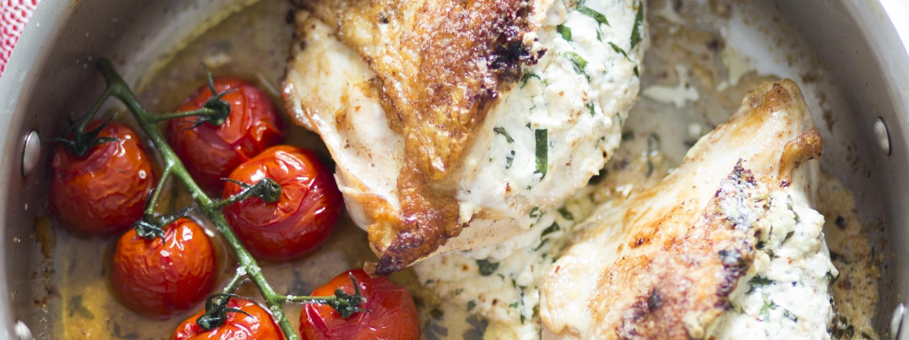
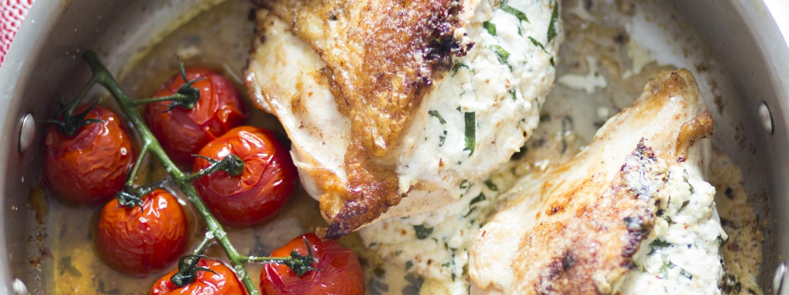

Thank you for stopping by! We love to share wholesome and delicious recipes, perfect for home cooked family meals.
more about chef stories≫most recent
 Fettuccine Alfredo with Mushrooms
Fettuccine Alfredo with Mushrooms
Fettuccine alfredo with mushrooms brings a mix of cheesy, creamy and earthy flavors together. It's a restaurant-worthy dish you can totally make at home.
 Skillet Pork Chops with Cabbage
Skillet Pork Chops with Cabbage
Pork chops cooked low and slow become so tender and juicy—and so do the cabbage and apples that cook with them. Serve with a cold beer and imagine yourself at a biergarten in Germany.
Thank you for stopping by! We love to share wholesome and delicious recipes, perfect for home cooked family meals.
more about chef stories≫Switch up your dinner routine this flank steak and citrus-avocado salsa! It's easy to make on the stovetop or on a grill, and feeds the whole family. Serve as tacos or over salad greens.
Quick and easy Irish soda bread recipe with flour, baking soda, salt, buttermilk, raisins, an egg, and a touch of sugar.
 Quick Chicken Pho
Quick Chicken Pho
Quick weeknight chicken pho from expert Andrea Nguyen! Shortcut version of traditional Vietnamese noodle soup. 30-minutes. Gluten-free.